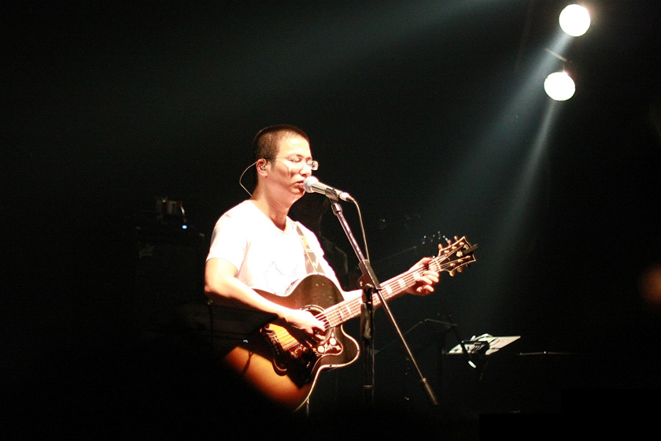

早在读书的时候，在买的口袋音乐杂志附赠的CD里，听过李志的《梵高先生》，但那时并没有提起很大兴致。直到09年春节回家，一个人在火车上听了他在《工体东路没有人》那张专辑里的《黑色信封》，被那几句嘶吼吼出了眼泪后，才开始认真地想去了解李志这个人。而那时开始，他已经走红，并且很长一段时间里也没再来过北京。我也就从未有机会见到李志先生，直到这个月的北京69。这次必然是要去看的，只是如今的李志已经红得不行。2个小时将近1000张门票就被售光，国内的独立音乐人里也没几个能做到了。
我曾多次看过李志的小型演出视频(比如石家庄的那次)，并非常想也经历那么一次。但由于他的走红，已经无法重现。那天的演出有好有坏，但对于我来说只是圆一个愿望。听李志唱歌，技巧其次，更多的是听他真性情的爆发，这种有点自伤身体的表演，我总觉得看一次少一次。当夜唯一的污点，是见识了很多挺二的听众，李志本身倒是没有让我失望，他的言行与为人都值得我尊敬。倒是人红了，喜欢的人也各式各样的都有。 对我来说，已很少迷一个人迷得盲目了，毕竟年纪大了。更多地我会与他保持一定距离，自我思考地去看待这个人，能略显客观一点吧。所以当演出后，李志走过我们身边时，我们什么也没做。 那天晚上之后，耳朵一直发炎，两周来什么音乐也没听过。